class: center, middle # Lecture 8: ### Recurrent Neural Networks Andrei Bursuc - Florent Krzakala - Marc Lelarge <br/> <br/> .center[<img src="images/logos.png" style="width: 700px;" />] .citation.tiny[ With slides from A. Karpathy, J. Johnson, C. Ollion, O. Grisel] --- ## Previously - Review of convolutions - CNN architectures (continued) + receptive field and dilated convolutions + the problems with training deep nets; ResNet - Visualizing and understanding CNNs - GPUs - Tips & tricks for training deep networks + data preprocessing and augmentation + hyper-parameter tuning and search + transfer learning / fine-tuning - Practical PyTorch: first RNN --- ## Recap .center[<img src="images/enigma_1.png" style="width: 760px;" />] --- ## Recap .center[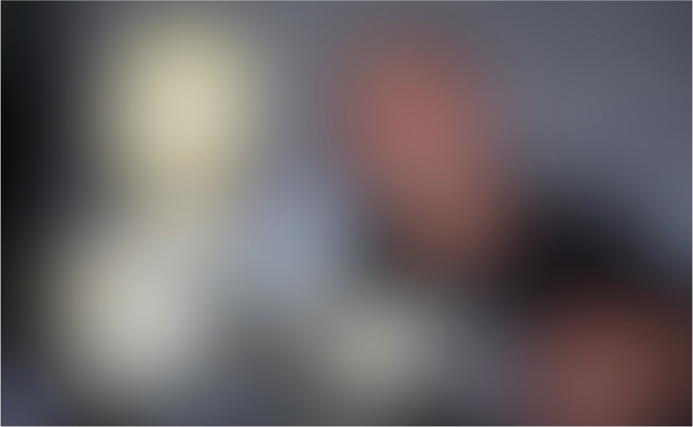] --- ## Recap .center[<img src="images/enigma_3.png" style="width: 760px;" />] --- ## Recap .center[<img src="images/enigma_4.png" style="width: 760px;" />] --- ## Recap .center[] --- ## Recap .center[] --- ## Recap .center[] --- ## Today .left[ - A training pipeline - Recurrent Neural Networks - Advanced RNNs ] --- ## Convolutional Neural Networks LeNet5 .center[<img src="images/lenet.png" style="width: 600px;" />] --- ## Convolutional Neural Networks VGG16 .center[<img src="images/vgg.png" style="width: 600px;" />] --- ## Convolutional Neural Networks .left-column[ ResNet ] .right-column[ .center[<img src="images/resnet.png" style="width: 250px;" />] ] --- ## Convolutional Neural Networks How to integrate the temporal dimension? --- ## Convolutional Neural Networks How to integrate the temporal dimension? .green[Option 1: Transform input into "images"] .left-column[ .center[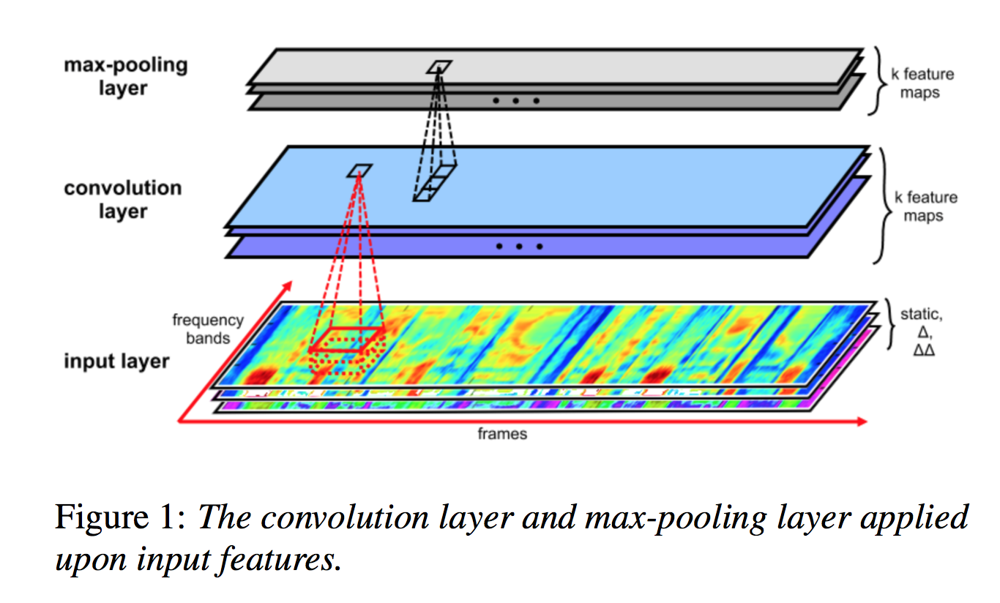] ] .right-column[ .center[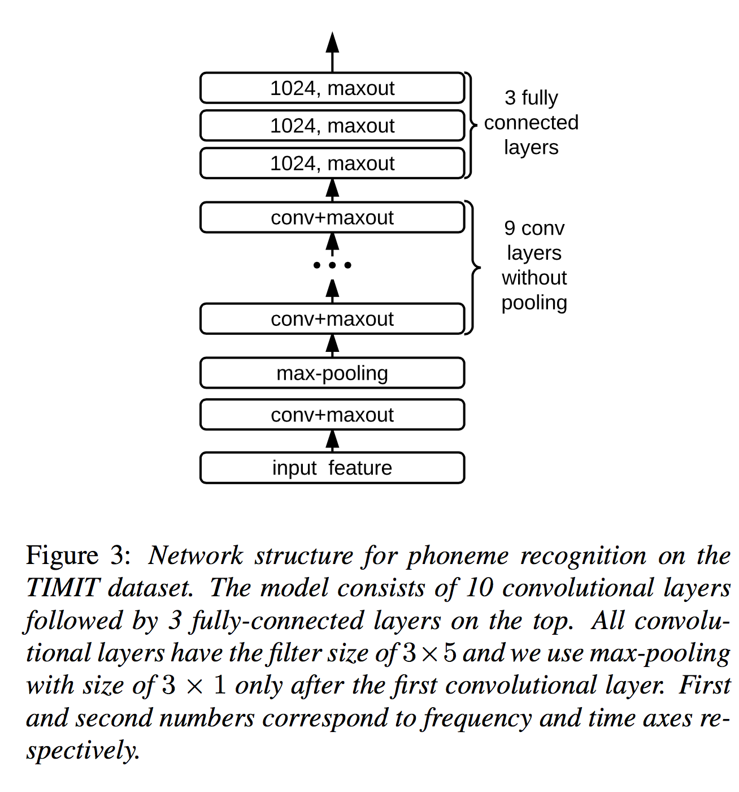] ] .reset-column[ ] <br/> .citation.tiny[ Zhang et al., Towards End-to-End Speech Recognition with Deep Convolutional Neural Networks, 2017 ] --- ## Convolutional Neural Networks How to integrate the temporal dimension? .green[Option 2: 1d convolutions] .left-column[ .center[<img src="images/cardio_cnn_1.svg" style="width: 300px;" />] ] .right-column[ .center[<img src="images/cardio_cnn_2.svg" style="width: 150px;" />] ] .reset-column[ ] <br/> .citation.tiny[ Rajpurkar et al., Cardiologist-Level Arrhythmia Detection With Convolutional Neural Networks, 2017 ] --- ## Convolutional Neural Networks How to integrate the temporal dimension? .green[Option 2: 1d convolutions] .left-column[ .center[<img src="images/wavenet_1.gif" style="width: 300px;" />] ] .right-column[ .center[<img src="images/wavenet_2.gif" style="width: 300px;" />] ] .reset-column[ ] <br/> .citation.tiny[ van den Oord et al., WaveNet: A Generative Model for Raw Audio, 2016] --- ## Convolutional Neural Networks How to integrate the temporal dimension? .green[Option 2: 1d convolutions] .center[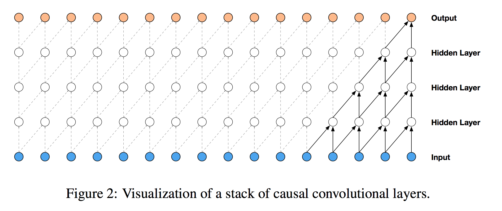] .center[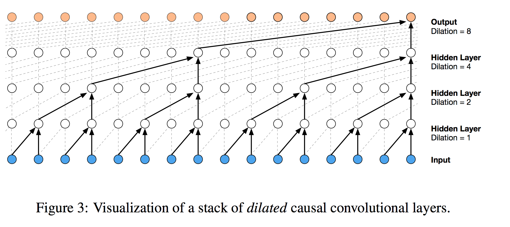] <br/> .citation.tiny[ van den Oord et al., WaveNet: A Generative Model for Raw Audio, 2016] --- ## Convolutional Neural Networks A different perspective .left[<img src="images/rnn_variants_1.png" style="width: 100px;" />] --- ## Recurrent Neural Networks Several variants .left[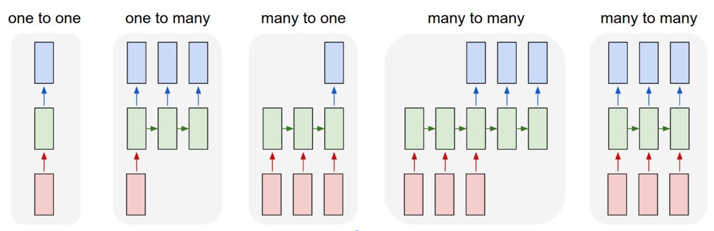] --- ## Recurrent Neural Networks Several variants .left[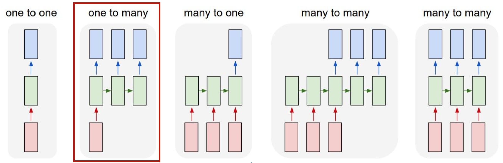] .reset-column[ ] <br/> .center[ .purple[Image captioning (image -> sequence of words)]] .credit[Figure credit: A. Karpathy] --- ## Recurrent Neural Networks Several variants .left[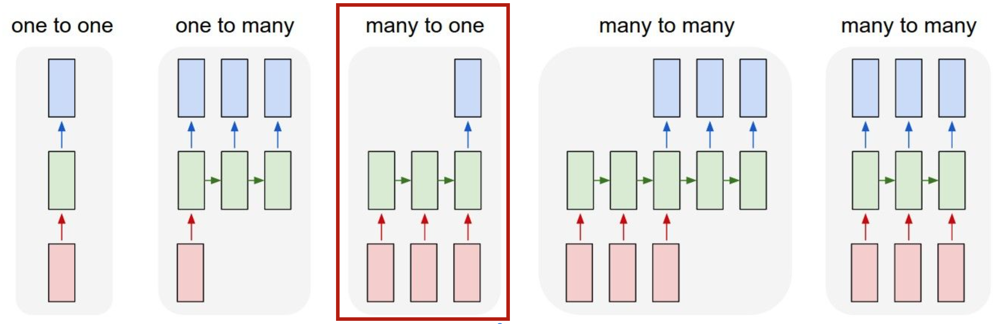] .reset-column[ ] <br/> .center[ .purple[Sentiment classification (sequence of words -> sentiment/class)]] .credit[Figure credit: A. Karpathy] --- ## Recurrent Neural Networks Several variants .left[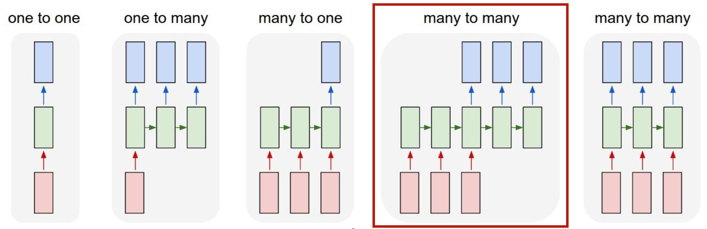] .reset-column[ ] <br/> .center[ .purple[Machine translation (sequence of words -> sequence of words)]] .credit[Figure credit: A. Karpathy] --- ## Recurrent Neural Networks Several variants .left[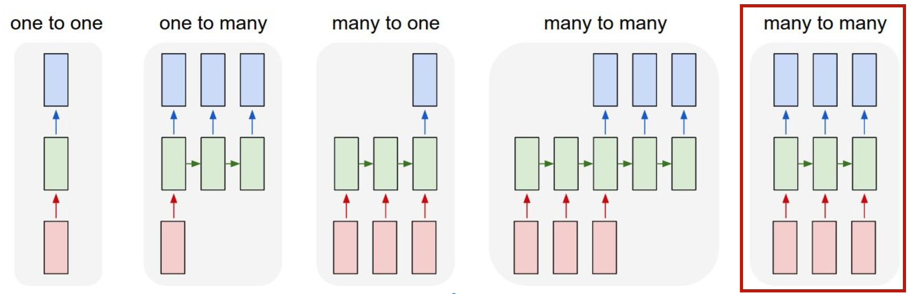] .reset-column[ ] <br/> .center[ .purple[Video classification on frame level. Language model]] .credit[Figure credit: A. Karpathy] --- ## Recurrent Neural Networks .center[<img src="images/rnn_1.png" style="width: 100px;" />] We can process a sequence of vectors **x** by applying a **recurrence formula** at every time step: `$$h_t = f_W(h_{t-1},x_t)$$` - $h_t$ = new state - $h_{t-1}$ = old state - $f_W$ = some function with parameters $W$ - $x_t$ = input column vector at time step $t$ .credit[Figure credit: C. Olah] --- ## Recurrent Neural Networks .center[<img src="images/rnn_1.png" style="width: 100px;" />] We can process a sequence of vectors **x** by applying a **recurrence formula** at every time step: `$$h_t = f_W(h_{t-1},x_t)$$` Typically: `$h_t = tanh(W_{hh}h_{t-1} + W_{xh}x_t)$` Output: `$y_t = W_{hy}h_t$` or `$y_t = \text{softmax}(W_{hy}h_t)$` .credit[Figure credit: C. Olah] --- ## Recurrent Neural Networks .center[<img src="images/rnn_2.png" style="width: 600px;" />] Unrolled representation `$$h_t = tanh(W_{hh}h_{t-1} + W_{xh}x_t)$$` `$$y_t = \text{softmax}(W_{hy}h_t)$$` .credit[Figure credit: C. Olah] --- ## Recurrent Neural Networks .center[<img src="images/rnn_1.png" style="width: 100px;" />] `$$h_t = tanh(W_{hh}h_{t-1} + W_{xh}x_t)$$` `$$y_t = \text{softmax}(W_{hy}h_t)$$` - $h_0 \in R^{D_h}$ is some initialization vector for the hidden layer at time step 0 - `$W_{hh} \in R^{D_h\times D_h}$`, `$W_{hx} \in R^{D_h\times d}$`, `$W_{hy} \in R^{|V|\times D_h}$` .credit[Figure credit: C. Olah] --- ## Recurrent Neural Networks .center[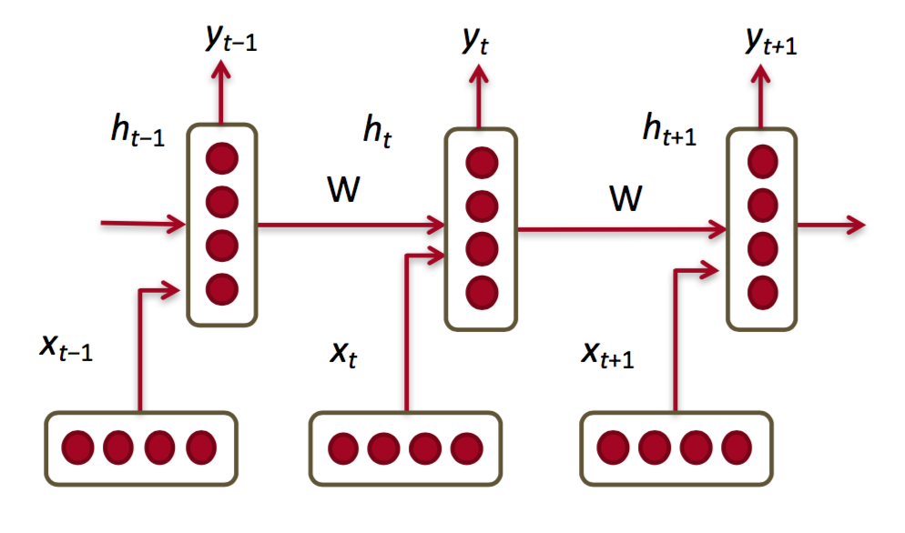] --- ## Backpropagation through time .center[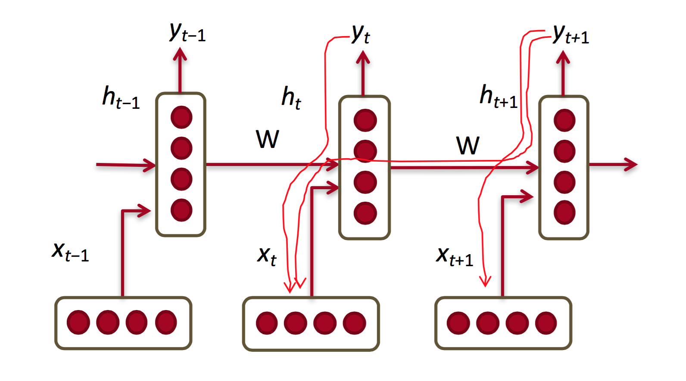] - similar as standard backpropagation on unrolled network - similar as training very deep networks with tied parameters - for very long sequences we use **truncate backpropagation through time** --- ## Truncated Backpropagation through time .left[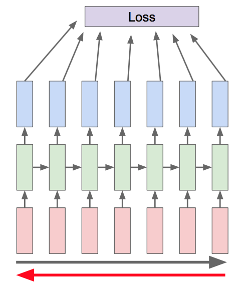] .reset-column[ ] Run forward and backward through chunks of the sequence instead of whole sequence .credit[Figure credit: J. Johnson] --- ## Truncated Backpropagation through time .left[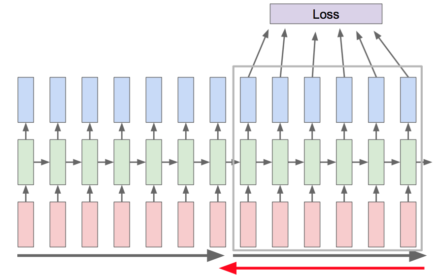] .reset-column[ ] Carry hidden states forward in time forever, but only backpropagate for some smaller number of steps .credit[Figure credit: J. Johnson] --- ## Truncated Backpropagation through time .left[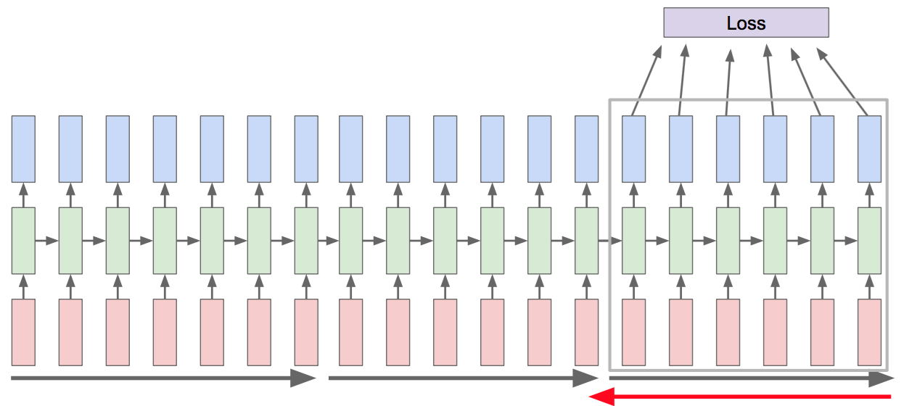] .reset-column[ ] .credit[Figure credit: J. Johnson] --- ## RNN computational graphs .center[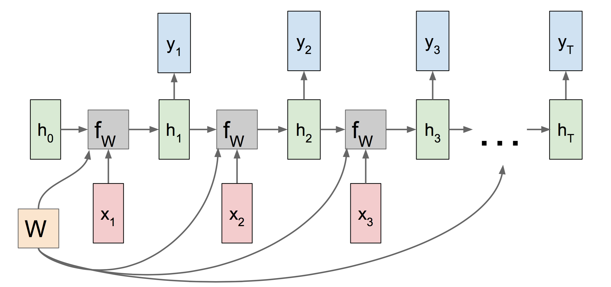] .center[.purple[Many to many]] .credit[Figure credit: J. Johnson] --- ## RNN computational graphs .center[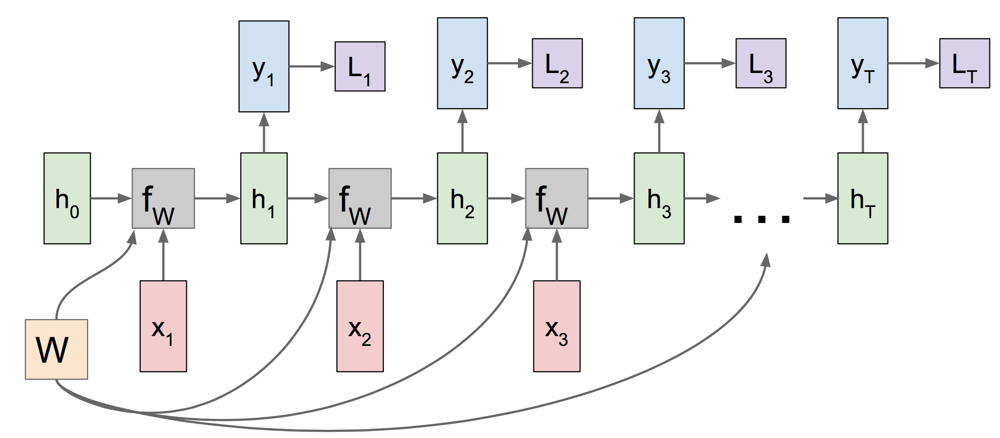] .center[.purple[Many to many]] .credit[Figure credit: J. Johnson] --- ## RNN computational graphs .center[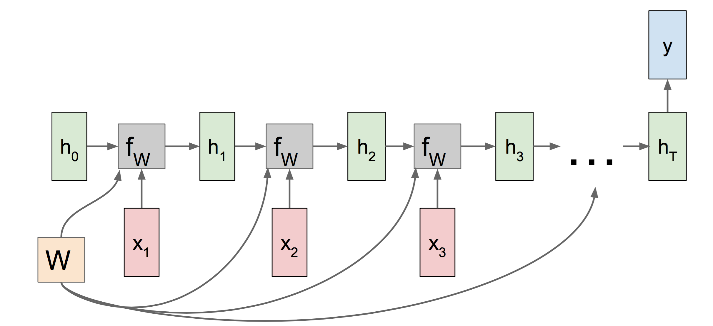] .center[.purple[Many to one]] .credit[Figure credit: J. Johnson] --- ## RNN computational graphs .center[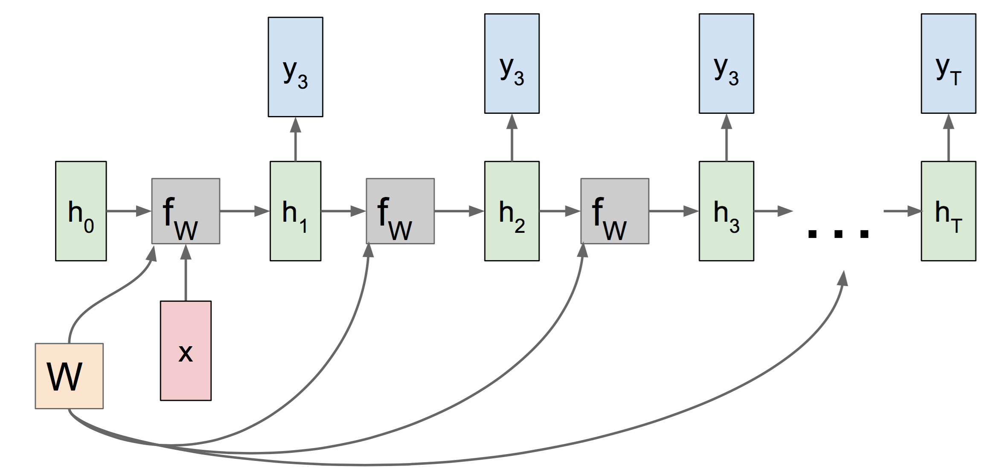] .center[.purple[One to many]] .credit[Figure credit: J. Johnson] --- ## RNN computational graphs <br/> <br/> .left[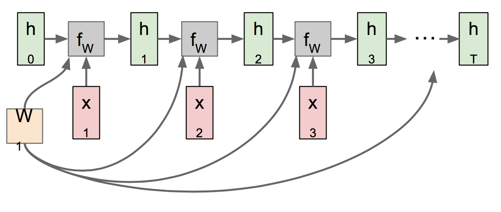] .reset-column[ ] .center[.purple[Sequence to sequence: many-to-one + one-to-many]] - many to one: encode input sequence in a single vector .credit[Figure credit: J. Johnson] --- ## RNN computational graphs .center[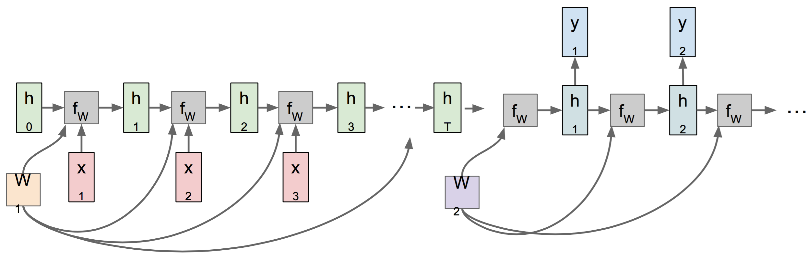] .center[.purple[Sequence to sequence: many-to-one + one-to-many]] - many to one: encode input sequence in a single vector - one to many: produce output sequence from single input vector .credit[Figure credit: J. Johnson] --- ## Example: char-RNN language model - generate next character in a word - vocabulary [h,e,l,o] - training sequence "hello" .center[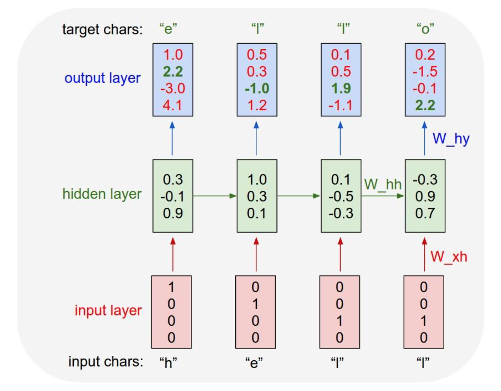] .credit[Figure credit: A. Karpathy] --- ## Example: char-RNN language model - generate next character in a word - vocabulary [h,e,l,o] - at test-time sample characters one at a time, feed back to model .center[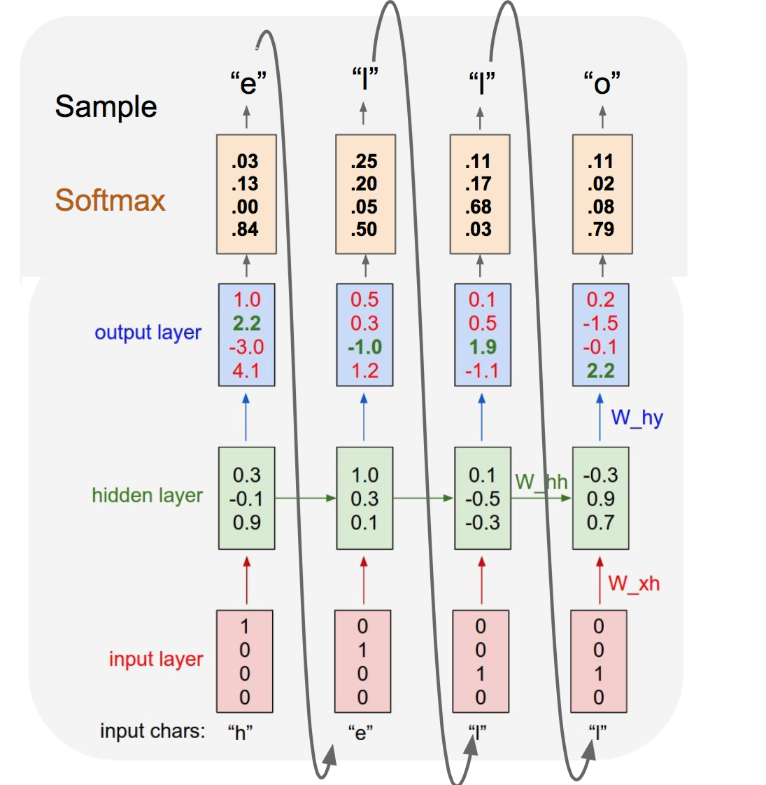] .credit[Figure credit: A. Karpathy] --- ## RNNs in practice Option 1: The hard way - for loop on time steps .grid[ .col-8-12[ ```py num_classes = 5 input_size = 5 # one-hot size hidden_size = 5 # output from the RNN. 5 to directly predict one-hot batch_size = 1 # one sentence sequence_length = 1 # one by one num_layers = 1 # one-layer rnn ``` ] ] --- ## RNNs in practice Option 1: The hard way - for loop on time steps .grid[ .col-7-12[ ```py class Model(nn.Module): def __init__(self): super(Model, self).__init__() self.rnn = nn.RNN(input_size=input_size, hidden_size=hidden_size, batch_first=True) def forward(self, hidden, x): # Reshape input (batch first) x = x.view(batch_size, sequence_length, input_size) # Propagate input through RNN # input: (batch, seq_len, input_size) # hidden: (batch, num_layers * num_directions, hidden_size) out, hidden = self.rnn(x, hidden) return hidden, out.view(-1, num_classes) def init_hidden(self): # Initialize hidden states # (batch, num_layers * num_directions, hidden_size) ... # ... for batch_first=True return Variable(torch.zeros(batch_size, num_layers, hidden_size)) ``` ] .col-5-12[ ```py # Predict next character: hell -> ello # 0 1 2 3 4 idx2char = ['h', 'e', 'l', 'o', '!'] x_data = [[0, 1, 2, 2]] # hell x_one_hot = [[[1, 0, 0, 0, 0], # h 0 [0, 1, 0, 0, 0], # e 1 [0, 0, 1, 0, 0], # l 2 [0, 0, 1, 0, 0]]] # l 2 y_data = [1, 2, 2, 3] # ello # As we have one batch of samples, we will # change them to variables only once inputs = Variable(torch.Tensor(x_one_hot)) labels = Variable(torch.LongTensor(y_data)) ... model = Model() ... for input, label in zip(inputs, labels): hidden, output = model(hidden, input) val, idx = output.max(1) sys.stdout.write(idx2char[idx.data[0]]) loss += criterion(output, label) ``` ] ] --- ## RNNs in practice Option 2: The better way - sequence-based processing .grid[ .col-8-12[ ```py num_classes = 5 input_size = 5 # one-hot size hidden_size = 5 # output from the RNN. 4 to directly predict one-hot batch_size = 1 # one sentence *sequence_length = 4 # |hell| == 4 num_layers = 1 # one-layer rnn ``` ] ] --- ## RNNs in practice Option 2: The better way - sequence-based processing .grid[ .col-7-12[ ```py class Model(nn.Module): def __init__(self): super(Model, self).__init__() self.rnn = nn.RNN(input_size=input_size, hidden_size=hidden_size, batch_first=True) def forward(self, x): # Initialize hidden states # (batch, num_layers * num_directions , hidden_size) ... # ... for batch_first=True h_0 = Variable(torch.zeros( x.size(0), num_layers, hidden_size)) # Reshape input x.view(x.size(0), sequence_length, input_size) # Propagate input through RNN # Input: (batch, seq_len, input_size) # h_0: (batch, num_layers * num_directions, hidden_size) out, _ = self.rnn(x, h_0) return out.view(-1, num_classes) ``` ] .col-5-12[ ```py # Predict next character: hell -> ello # 0 1 2 3 4 idx2char = ['h', 'e', 'l', 'o', '!'] x_data = [[0, 1, 2, 2]] # hell x_one_hot = [[[1, 0, 0, 0, 0], # h 0 [0, 1, 0, 0, 0], # e 1 [0, 0, 1, 0, 0], # l 2 [0, 0, 1, 0, 0]]] # l 2 y_data = [1, 2, 2, 3] # ello labels = Variable(torch.LongTensor(y_data)) # As we have one batch of samples, we will # change them to variables only once inputs = Variable(torch.Tensor(x_one_hot)) ... model = Model() ... outputs = model(inputs) ``` ] ] --- ## RNNs in practice Option 3: Also a better way - sequence + embeddings .grid[ .col-8-12[ ```py num_classes = 5 input_size = 5 *embedding_size = 10 # embedding size hidden_size = 5 # output from the RNN. 5 to directly predict one-hot batch_size = 1 # one sentence *sequence_length = 4 # |hell| == 4 num_layers = 1 # one-layer rnn ``` ] ] --- ## RNNs in practice Option 3: Also a better way - sequence + embeddings (embeddings are quite handy for converting input data into continuous 1d vectors) .grid[ .col-7-12[ ```py class Model(nn.Module): def __init__(self): super(Model, self).__init__() self.embedding = nn.Embedding(input_size, embedding_size) self.rnn = nn.RNN(input_size=embedding_size, hidden_size=5, batch_first=True) self.fc = nn.Linear(hidden_size, num_classes) def forward(self, x): # Initialize hidden states # (batch, num_layers * num_directions, hidden_size) ... # ... for batch_first=True h_0 = Variable(torch.zeros( x.size(0), num_layers, hidden_size)) emb = self.embedding(x) emb = emb.view(batch_size, sequence_length, -1) # Propagate embedding through RNN # Input: (batch, seq_len, embedding_size) # h_0: (batch, num_layers * num_directions, hidden_size) out, _ = self.rnn(emb, h_0) return self.fc(out.view(-1, num_classes)) ``` ] .col-5-12[ ```py # Predict next character: hell -> ello # 0 1 2 3 4 idx2char = ['h', 'e', 'l', 'o', '!'] x_data = [[0, 1, 2, 2]] # hell one_hot_lookup = [[1, 0, 0, 0, 0], # 0 [0, 1, 0, 0, 0], # 1 [0, 0, 1, 0, 0], # 2 [0, 0, 0, 1, 0], # 3 [0, 0, 0, 0, 1]] # 4 x_one_hot = [one_hot_lookup[x] for x in x_data] y_data = [1, 2, 2, 3] # ello # As we have one batch of samples, we will # change them to variables only once inputs = Variable(torch.Tensor(x_one_hot)) labels = Variable(torch.LongTensor(y_data)) ... model = Model() ... outputs = model(inputs) ``` ] ] --- ## Multi-layer RNNs - *aka* deep RNNs .center[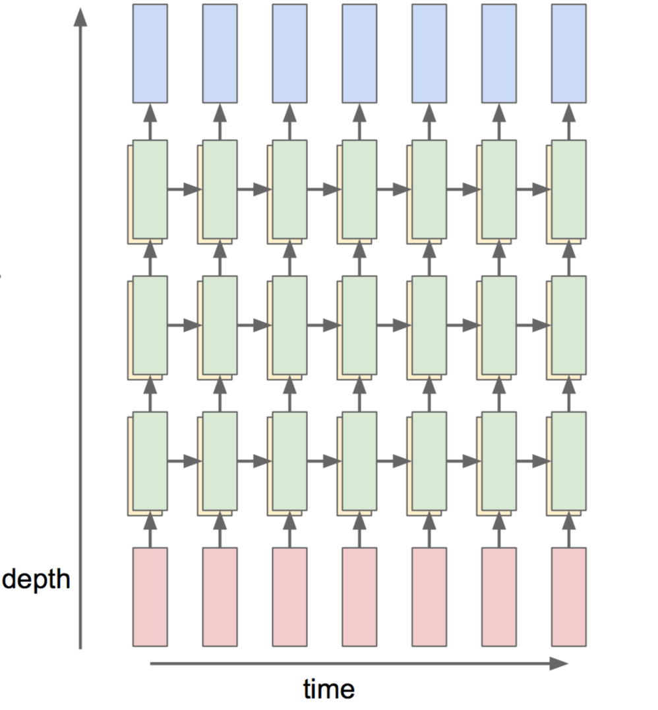] .credit[Figure credit: J. Johnson] --- ## Training RNNs is hard .center[] - Multiply the same matrix at each time step during forward prop --- ## Training RNNs is hard .center[] - Multiply the same matrix at each time step during backprop --- ## Training RNNs is hard .center[] - Largest singular value > 1 $\rightarrow$ **exploding gradients** - Largest singular value < 1 $\rightarrow$ **vanishing gradients** --- ## Gradient clipping - Largest singular value > 1 $\rightarrow$ **exploding gradients** - Scale gradient if its norm is too big ```py def clip_grad_norm(parameters, max_norm, norm_type=2): parameters = list(filter(lambda p: p.grad is not None, parameters)) max_norm = float(max_norm) norm_type = float(norm_type) if norm_type == float('inf'): total_norm = max(p.grad.data.abs().max() for p in parameters) else: * total_norm = 0 * for p in parameters: * param_norm = p.grad.data.norm(norm_type) * total_norm += param_norm ** norm_type * total_norm = total_norm ** (1. / norm_type) * clip_coef = max_norm / (total_norm + 1e-6) * if clip_coef < 1: * for p in parameters: * p.grad.data.mul_(clip_coef) return total_norm ``` --- ## Training RNNs is hard - Largest singular value < 1 $\rightarrow$ **vanishing gradients** - We need to find another RNN architecture --- ## LSTM .center[ <img src="images/unrolled_lstm_2.svg" style="width: 500px;" /> ] .citation.tiny[ Hochreiter and Schmidhuber, Long short-term memory, 1997 ] .credit[Slide credit: C. Ollion & O.Grisel] --- ## LSTM .center[ <img src="images/unrolled_lstm_1.svg" style="width: 500px;" /> ] .citation.tiny[ Hochreiter and Schmidhuber, Long short-term memory, 1997 ] .credit[Slide credit: C. Ollion & O.Grisel] --- ## LSTM .center[ <img src="images/unrolled_lstm.svg" style="width: 500px;" /> ] .citation.tiny[ Hochreiter and Schmidhuber, Long short-term memory, 1997 ] .credit[Slide credit: C. Ollion & O.Grisel] -- - 4 times more parameters than RNN -- - Mitigates **vanishing gradient** problem through **gating** -- - Widely used and SOTA in many sequence learning problems --- ## Inside LSTM .center[ <img src="images/lstm_0.png" style="width: 600px;" /> ] .center[ 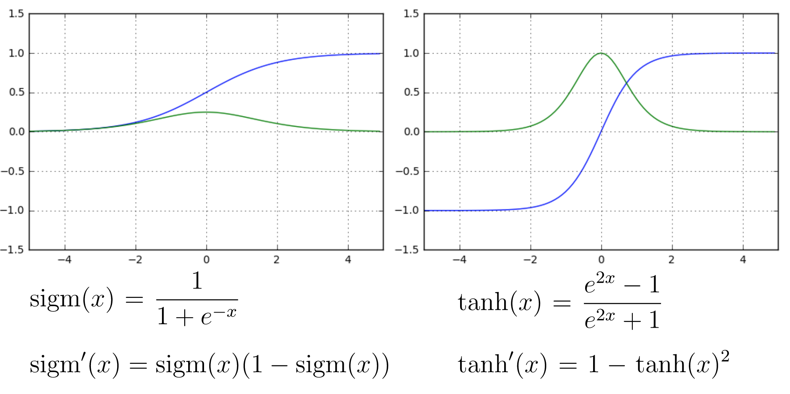 ] .center[ 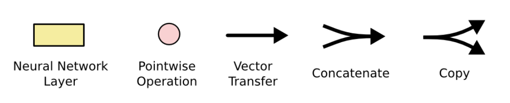 ] .citation.tiny[ Hochreiter and Schmidhuber, Long short-term memory, 1997 ] .credit[Figure credit: [C. Olah](http://colah.github.io/posts/2015-08-Understanding-LSTMs/)] --- ## Inside LSTM Cell state .center[ <img src="images/lstm_1.png" style="width: 600px;" /> ] .left-column[ .center[ ] ] .right-column[ .center[] ] .reset-column[ ] .citation.tiny[ Hochreiter and Schmidhuber, Long short-term memory, 1997 ] .credit[Figure credit: [C. Olah](http://colah.github.io/posts/2015-08-Understanding-LSTMs/)] --- ## Inside LSTM Forget gate layer .center[ <img src="images/lstm_2.png" style="width: 600px;" /> ] .left-column[.center[ ] ] .right-column[ .center[] ] .reset-column[ ] - decides what information we're going to throw away from the cell state .citation.tiny[ Hochreiter and Schmidhuber, Long short-term memory, 1997 ] .credit[Figure credit: [C. Olah](http://colah.github.io/posts/2015-08-Understanding-LSTMs/)] --- ## Inside LSTM Input gate layer .center[ <img src="images/lstm_3.png" style="width: 600px;" /> ] .left-column[.center[ ]] .right-column[ .center[] ] .reset-column[ ] - decides what new information we're going to store in the cell state - creates a vector of new candidate values $\tilde{C_t}$ .citation.tiny[ Hochreiter and Schmidhuber, Long short-term memory, 1997 ] .credit[Figure credit: [C. Olah](http://colah.github.io/posts/2015-08-Understanding-LSTMs/)] --- ## Inside LSTM Update cell state .center[ <img src="images/lstm_4.png" style="width: 600px;" /> ] .left-column[.center[ ]] .right-column[ .center[] ] .reset-column[ ] - filter-out information to forget - update with new cell state candidate .citation.tiny[ Hochreiter and Schmidhuber, Long short-term memory, 1997 ] .credit[Figure credit: [C. Olah](http://colah.github.io/posts/2015-08-Understanding-LSTMs/)] --- ## Inside LSTM Output gate .center[ <img src="images/lstm_5.png" style="width: 600px;" /> ] .left-column[.center[ ]] .right-column[ .center[] ] .reset-column[ ] - decides what we're going to ouput and send to the next time step .citation.tiny[ Hochreiter and Schmidhuber, Long short-term memory, 1997 ] .credit[Figure credit: [C. Olah](http://colah.github.io/posts/2015-08-Understanding-LSTMs/)] --- ## Inside LSTM .center[ <img src="images/lstm_0.png" style="width: 600px;" /> ] Hidden state vs Cell state: - cell state: stores contextual and longer term information - hidden state: stores immediately necessary information $$y_t = \text{softmax}( \mathbf{W} \cdot h\_t + b )$$ .citation.tiny[ Hochreiter and Schmidhuber, Long short-term memory, 1997 ] .credit[Figure credit: [C. Olah](http://colah.github.io/posts/2015-08-Understanding-LSTMs/)] --- ## Inside LSTM .center[ 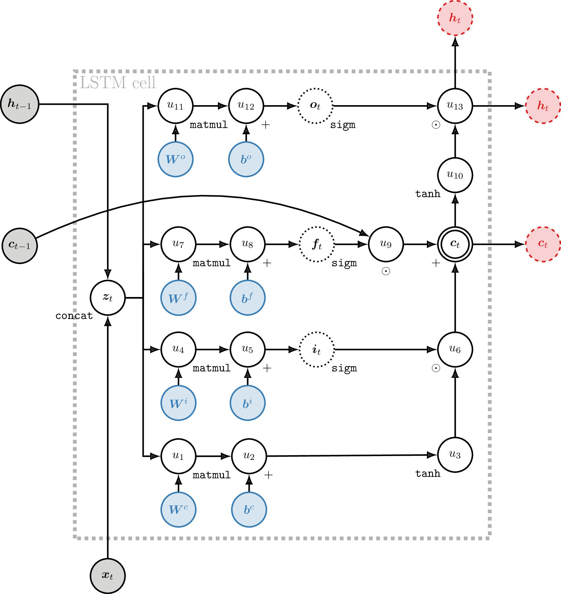 ] .credit[Figure credit: T. Rocktäschel] --- ## Inside LSTM .left-column[ LSTM in python from scratch (no fancy DL framework and autodiff): [https://github.com/nicodjimenez/lstm](https://github.com/nicodjimenez/lstm) ] .right-column[ .center[ 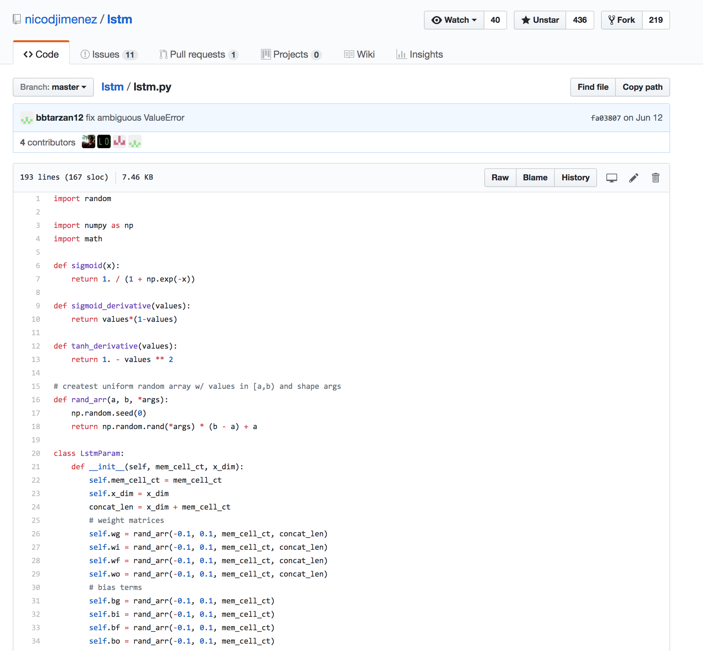 ] ] --- ## How to use LSTMs in practice From RNNs to LSTMs .grid[ .col-6-12[ ```py class Model(nn.Module): def __init__(self): super(Model, self).__init__() self.embedding = nn.Embedding(input_size, embedding_size) * self.rnn = nn.RNN(input_size=embedding_size, * hidden_size=hidden_size, * num_layers=num_layers) self.fc = nn.Linear(hidden_size, num_classes) def forward(self, x): # Initialize hidden states h_0 = Variable(torch.zeros( x.size(0), num_layers, hidden_size)) emb = self.embedding(x) emb = emb.view(batch_size, sequence_length, -1) # Propagate embedding through RNN * out, _ = self.rnn(emb, h_0) return self.fc(out.view(-1, num_classes)) ``` ] .col-6-12[ ```py class Model(nn.Module): def __init__(self): super(Model, self).__init__() self.embedding = nn.Embedding(input_size, embedding_size) * self.rnn = nn.LSTM(input_size=embedding_size, * hidden_size=hidden_size, * num_layers=num_layers) self.fc = nn.Linear(hidden_size, num_classes) def forward(self, x): # Initialize hidden states h_0 = Variable(torch.zeros( x.size(0), num_layers, hidden_size)) * # optionally you can input cell_state otherwise * # it is set to 0s * c_0 = Variable(torch.zeros( * x.size(0), num_layers, hidden_size)) emb = self.embedding(x) emb = emb.view(batch_size, sequence_length, -1) # Propagate embedding through RNN * out, _ = self.rnn(emb, (h_0,c_0)) return self.fc(out.view(-1, num_classes)) ``` ] ] --- ## GRU (Gated Recurrent Units) .center[ <img src="images/gru.png" style="width: 500px;" /> ] - GRU first computes an update gate (another layer) based on current input word vector and hidden state - Compute reset gate similarly but with different weights + If reset gate unit is ~0, then this ignores previous memory and only stores the new word information - Final memory at time step combines current and previous time steps: .citation.tiny[ Cho et al., Learning phrase representations using rnn encoder-decoder for statistical machine translation, 2014 ] .credit[Figure credit: [C. Olah](http://colah.github.io/posts/2015-08-Understanding-LSTMs/)] --- ## Other variants Bidirectional RNNs .left-column[ .center[ <img src="images/bidirectional-rnn_1.png" style="width: 400px;" /> ] ] .right-column[ .center[ 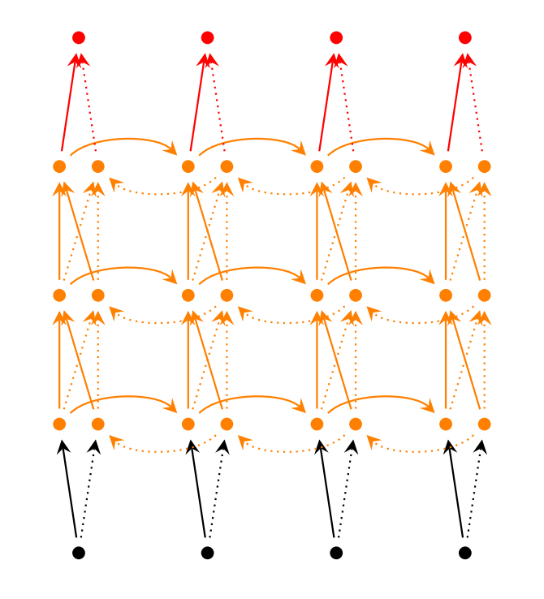 ] ] --- ## Other variants Bidirectional RNNs .left-column[ .center[Explicit form] .center[ 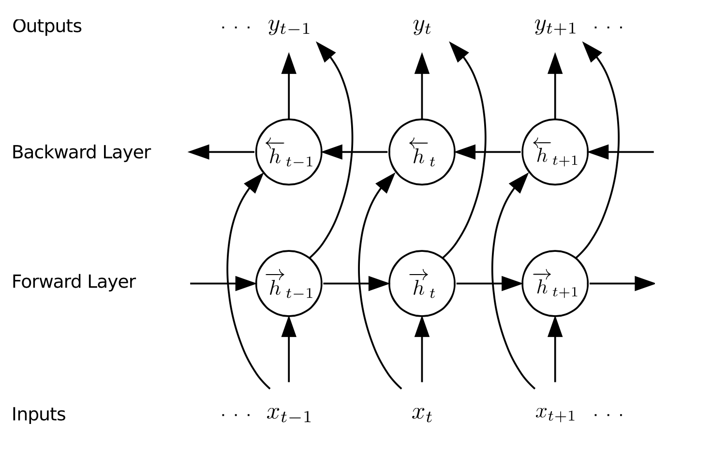 ] ] .right-column[ .center[Bidirectional LSTMs] .center[ 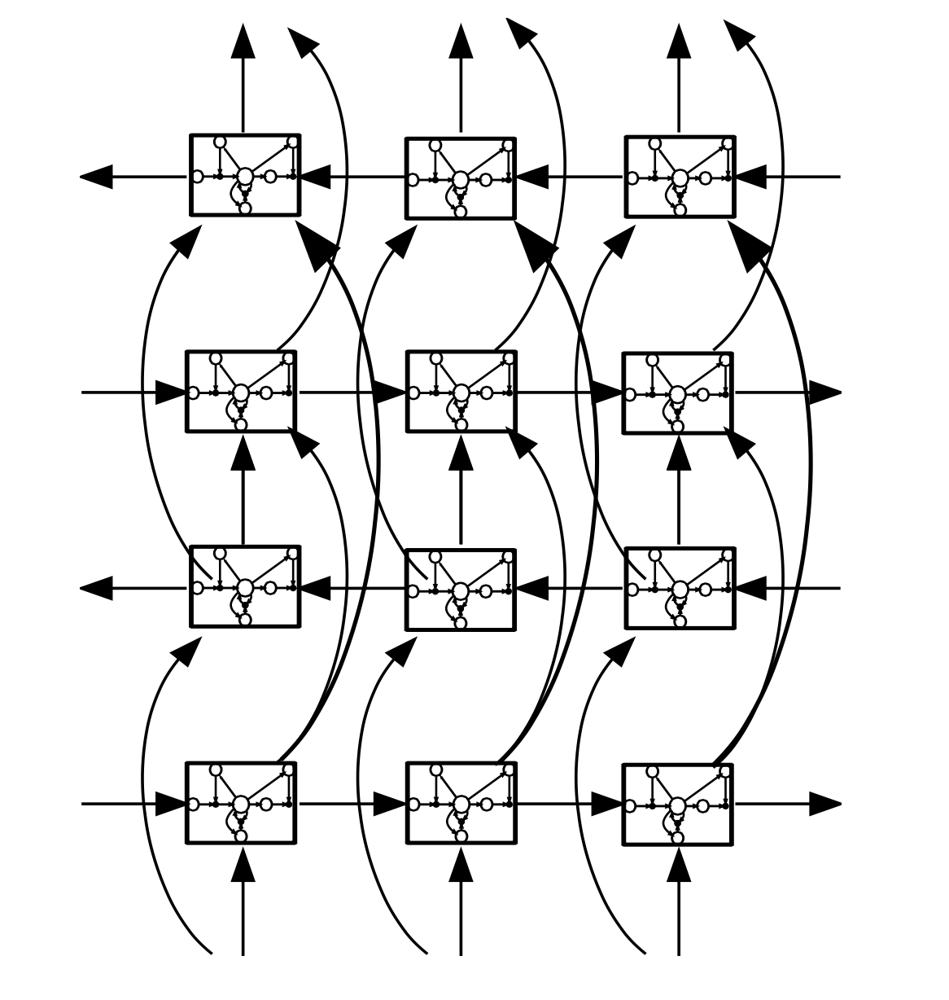 ] ] .reset-column[ ] .credit[Figure credit: A. Graves] --- ## Applications - Text classification - Language models --- ## Language models Assign a probability to a sequence of words, e.g: - $p(\text{"I like cats"}) > p(\text{"I table cats"})$ - $p(\text{"I like cats"}) > p(\text{"like I cats"})$ -- **Sequence modelling** $$ p\_{\theta}(w\_n | w\_{n-1}, w\_{n-2}, \ldots, w\_0) \cdot p\_{\theta}(w\_{n-1} | w\_{n-2}, \ldots, w\_0) \cdot \ldots \cdot p\_{\theta}(w\_{0}) $$ -- $p\_{\theta}$ is parameterized by a neural network. --- ## Language models Generating speeches .center[ 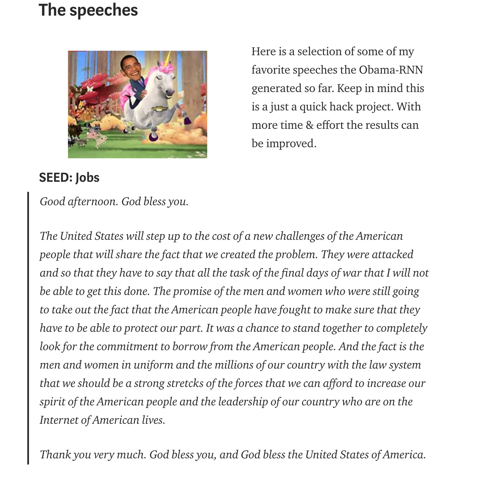 ] --- ## Language models Generating theather plays .center[ 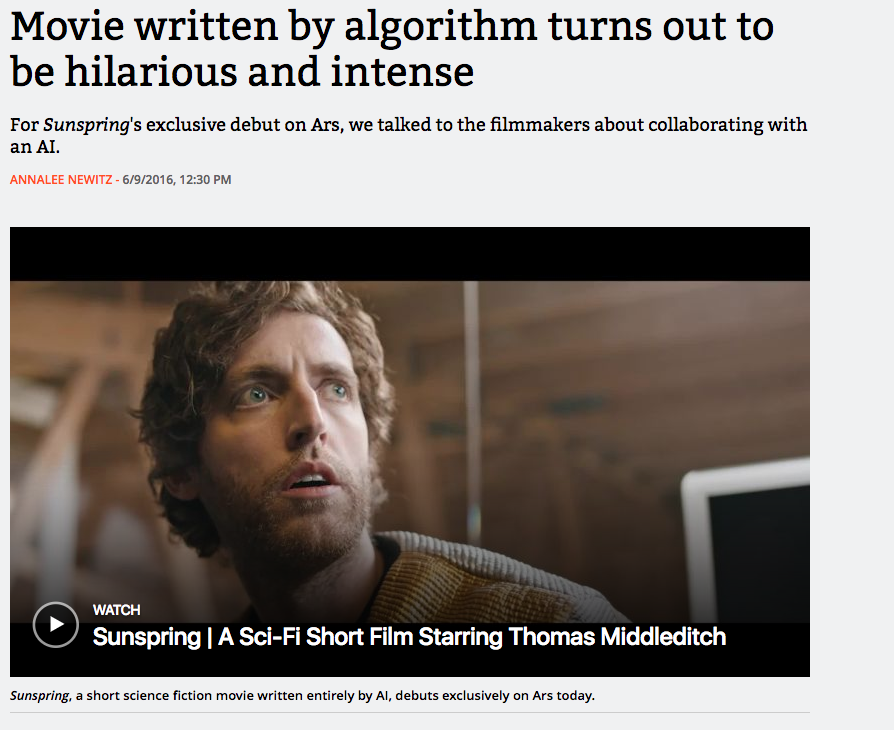 ] --- ## Applications - Text classification - Language models - Conditional Language Models --- ## Conditional Language Models NLP problems expressed as **Conditional Language Models**: **Translation:** $p(Target | Source)$ - *Source*: "J'aime les chats" - *Target*: "I like cats" ??? Question: do you have any idea of those NLP tasks that could be tackled with a similar conditional modeling approach? -- **Question Answering / Dialogue:** $p( Answer | Question , Context )$ - *Context*: "John put 2 glasses on the table. Bob adds two more glasses" - *Question*: "How many glasses are there?" - *Answer*: "There are four glasses." -- **Image Captionning:** $p( Caption | Image )$ .credit[Slide credit: C. Ollion & O.Grisel] --- ## Applications - Text classification - Language models - Conditional Language Models + Machine Translation + Image captioning + Question answering --- ## Encoder-Decoder .center[ <img src="images/encoder_decoder_1.svg" style="width: 680px;" /> ] .citation.tiny[ Cho et al. Learning phrase representations using RNN encoder-decoder for statistical machine translation, 2014 ] .credit[Slide credit: C. Ollion & O.Grisel] --- ## Encoder-Decoder .center[ <img src="images/encoder_decoder_2.svg" style="width: 680px;" /> ] .citation.tiny[ Cho et al. Learning phrase representations using RNN encoder-decoder for statistical machine translation, 2014 ] .credit[Slide credit: C. Ollion & O.Grisel] --- ## Encoder-Decoder .center[ <img src="images/encoder_decoder.svg" style="width: 680px;" /> ] .citation.tiny[ Cho et al. Learning phrase representations using RNN encoder-decoder for statistical machine translation, 2014 ] .credit[Slide credit: C. Ollion & O.Grisel] --- ## Encoder-Decoder .center[ <img src="images/encoder_decoder_forcing.svg" style="width: 680px;" /> ] .citation.tiny[ Cho et al. Learning phrase representations using RNN encoder-decoder for statistical machine translation, 2014 ] .credit[Slide credit: C. Ollion & O.Grisel] --- ## Sequence to Sequence .center[ <img src="images/basic_seq2seq.png" style="width: 760px;" /> ] .credit[Slide credit: C. Ollion & O.Grisel] .citation.tiny[ Sutskever et al., Sequence to sequence learning with neural networks, NIPS 2014 ] - Encoder-Decoder architecture -- - **Reverse input sequence** for translation - Special symbols for starting decoding and end of sentence -- - Encoder and decoder can **share weights** (but more common to have separate weights) --- ## Attention Mechanism Main problem with Encoder-Decoder: - A sentence may have different parts with different concepts - The **whole sentence** is represented as a **single vector** .center[ *I like cats but I don't like dogs* ] .credit[Slide credit: C. Ollion & O.Grisel] -- <br/> Solution: - Use all outputs of the encoder $\{h_i\}$ to compute the outputs - Build an **Attention Mechanism** to determine which output(s) to attend to --- ## Attention Mechanism .center[ <img src="images/attention_0.png" style="width: 670px;" /> ] .citation.tiny[Badhanau et al., Neural machine translation by jointly learning to align and translate, 2014] .credit[Slide credit: C. Ollion & O.Grisel] --- ## Attention Mechanism .center[ <img src="images/attention_1.png" style="width: 670px;" /> ] .citation.tiny[Badhanau et al., Neural machine translation by jointly learning to align and translate, 2014] .credit[Slide credit: C. Ollion & O.Grisel] --- ## Attention Mechanism .center[ <img src="images/attention_2.png" style="width: 670px;" /> ] .citation.tiny[Badhanau et al., Neural machine translation by jointly learning to align and translate, 2014] .credit[Slide credit: C. Ollion & O.Grisel] --- ## Attention Mechanism .center[ <img src="images/attention_3.png" style="width: 670px;" /> ] .citation.tiny[Badhanau et al., Neural machine translation by jointly learning to align and translate, 2014] .credit[Slide credit: C. Ollion & O.Grisel] --- ## Visualizing Attention .center[ <img src="images/align.png" style="width: 670px;" /> ]http://lstm.seas.harvard.edu/ .citation.tiny[Badhanau et al., Neural machine translation by jointly learning to align and translate, 2014] .credit[Slide credit: C. Ollion & O.Grisel] --- ## Image Captioning .center[ <img src="images/captioning_model.png" style="width: 500px;" /> ] .citation.tiny[ Xu et al., Show, Attend and Tell: Neural Image Caption Generation with Visual Attention, ICML 2015 ] -- .center[ <img src="images/visual_attention.png" style="width: 500px;" /> ] --- ## Google Translate Very deep LSTMs currently used in production at Google .center[ 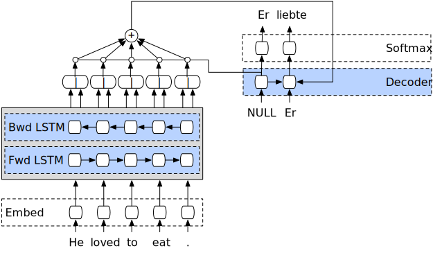 ] .citation.tiny[ Wu et al., Google's Neural Machine Translation System: Bridging the Gap between Human and Machine Translation, 2016 ] --- ## Google Translate Very deep LSTMs currently used in production at Google .center[ <img src="images/gnmt_arch_deep.svg" style="width: 450px;" /> ] .citation.tiny[ Wu et al., Google's Neural Machine Translation System: Bridging the Gap between Human and Machine Translation, 2016 ] --- ## Applications - Text classification - Language models - Conditional Language Models + Machine Translation + Image captioning + Question answering - Neural Turing Machine --- ## Neural Turing Machines .center[ 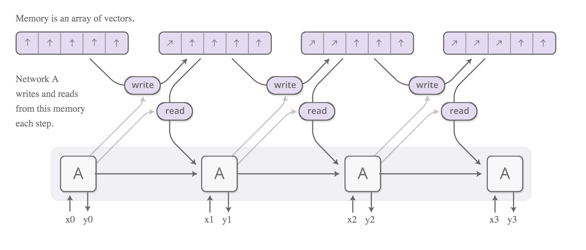 ] .citation.tiny[Graves et al., Neural Turing Machines, 2014] --- ## Applications - Text classification - Language models - Conditional Language Models + Machine Translation + Image captioning + Question answering - Neural Turing Machine - Visual-inertial odometry --- ## Visual-inertial odometry .center[ 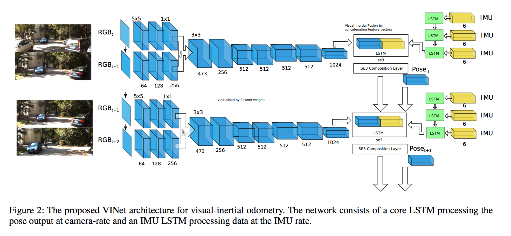 ] .citation.tiny[Clark et al., VINet: Visual-Inertial Odometry as a Sequence-to-Sequence Learning Problem, 2017] --- ## Applications - Text classification - Language models - Conditional Language Models + Machine Translation + Image captioning + Question answering - Neural Turing Machine - Visual-inertial odometry - Speech recognition - Anomaly detection in time series - Time series prediction - Music composition ... --- ## Visualizing and understanding RNNs .center[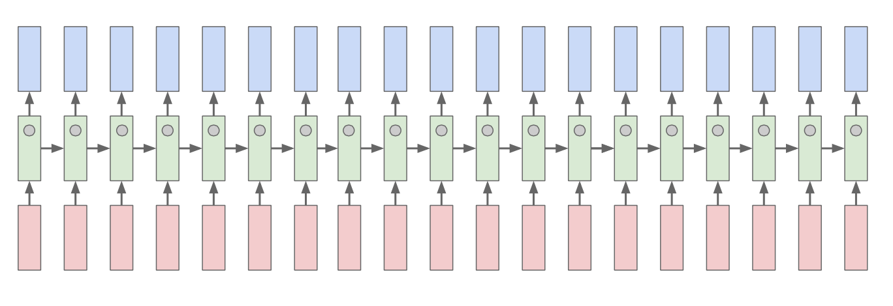] .credit[Figure credit: A. Karpathy] --- ## Visualizing and understanding RNNs .center[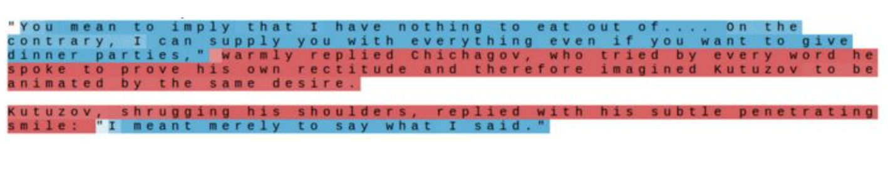] .credit[Figure credit: A. Karpathy] --- ## Visualizing and understanding RNNs .center[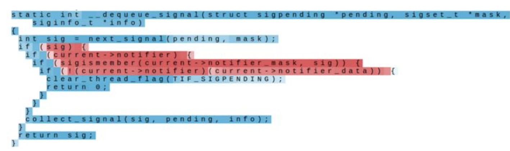] .credit[Figure credit: A. Karpathy] --- ## Visualizing and understanding RNNs [LSTMVis toolbox](http://lstm.seas.harvard.edu/) .center[<img src="images/lstm_vis_harvard.png" style="width: 760px;" />] --- ## Recap .center[] --- ## Recap .center[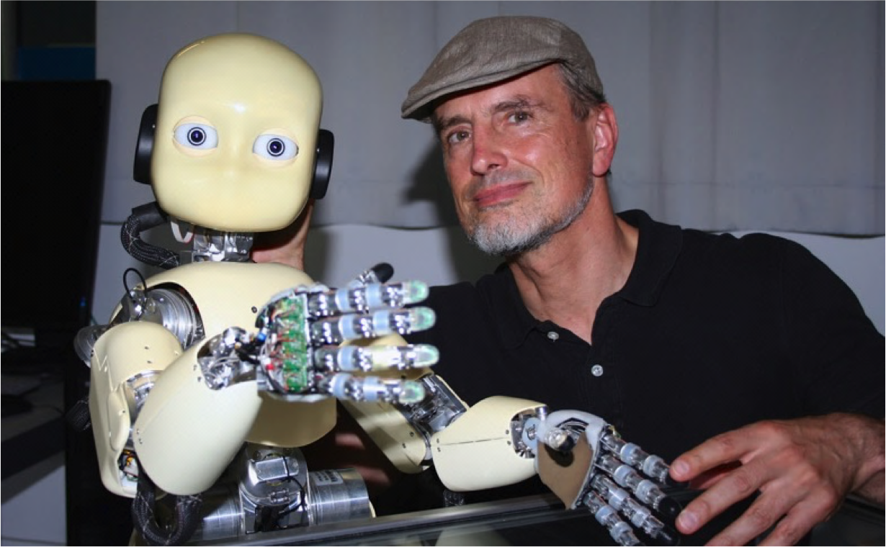] .center[.purple[Juergen Schmidhuber [You_again Shmidhoobuh]]] --- ## Recap .center[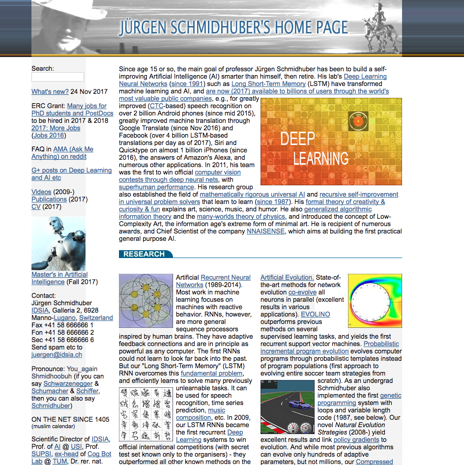] --- ## Recap .center[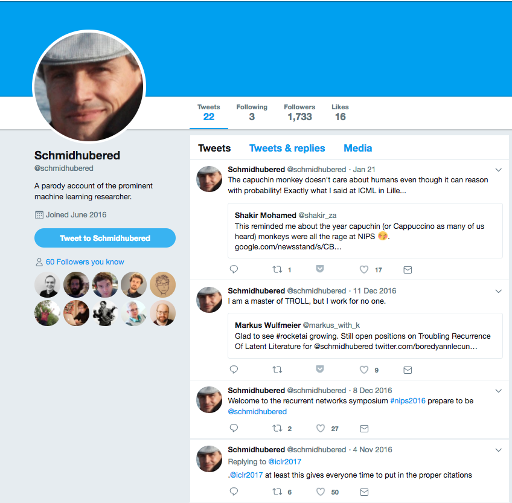] --- ## Today .left[ - A training pipeline - Recurrent Neural Networks - Challenges in training RNNs - Memory preserving RNNs: LSTMs ]